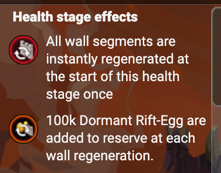
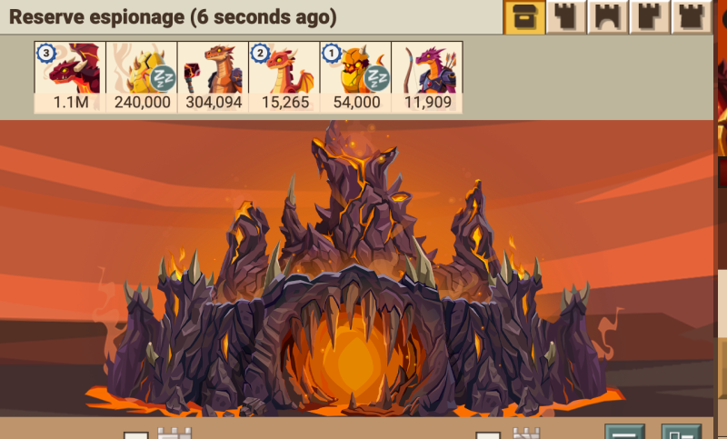
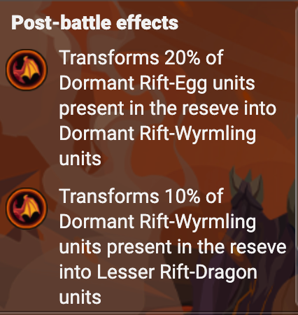
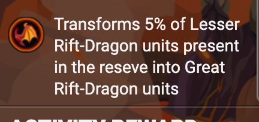
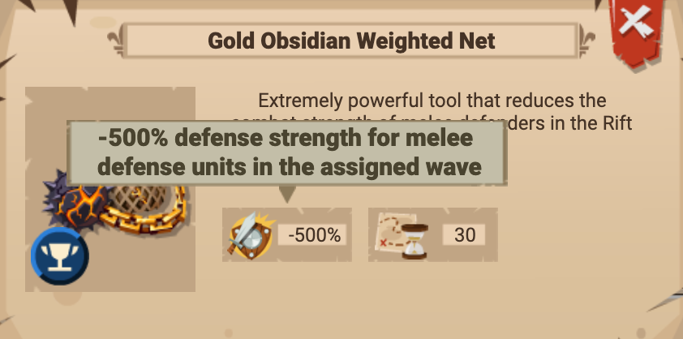

The Ashen Tyrant looks outrageously complicated the first time you meet it — but stripped right back, it's a more tedious version of the Fungal rift. Same core loop (it spawns extra reserve troops when walls regenerate), with two changes bolted on that you must understand: post-battle evolution and the new wall tooling. This builds on Rift Raid Basics and reads as a companion to the Fungal guide — skim those first.
Same as Fungal: eggs spawn when walls regenerate
Just like the Fungal boss dumps spores, the Dragon boss feeds eggs into its reserve every time a wall regenerates — that happens at the start of a new health stage, or whenever a wall timer expires and you have to break it again. So sloppy wall timing literally refills the boss.


Big change #1: post-battle evolution (why your hits make the bar go up)
This is the part that confuses everyone. After every attack — win or lose — the dragon troops "evolve" up through three tiers. Eggs become first-phase dragons, those become the next tier, and so on.


Big change #2: the walls hit back — bring −range% / −melee% tools
Zombie and Fungal walls are mostly about protection percentages. Dragon walls are different: they carry an enormous range, melee, and flank/front attack bonus, so the wall itself shreds your incoming army. To get through you have to cancel that down with the −range% and −melee% tools.
- Bronze versions come from the rift event shop.
- Silver and gold versions are in the webshop / ruby shop.

The short version
- It's Fungal-but-tedious: walls regenerating (new stage, or expired timers) keep adding eggs to the reserve.
- Every attack evolves the reserve a tier up — so the bar rises for ~10 hits, then drops once the eggs run out.
- Dragon walls have huge range/melee/flank/front attack — bring −range% and −melee% tools (bronze = rift shop, silver/gold = webshop). They only affect the higher-stat side, so pick the right one.
- Up to level 5 (6 for gate) you can fully negate range + melee — no rams/ladders, any troops work.
Use the tools below alongside this: the Rift Wall-Break Simulator (VIP Corner) checks whether a send actually breaks through, and the Rift Raid Bosses overview lists each stage's wall numbers.